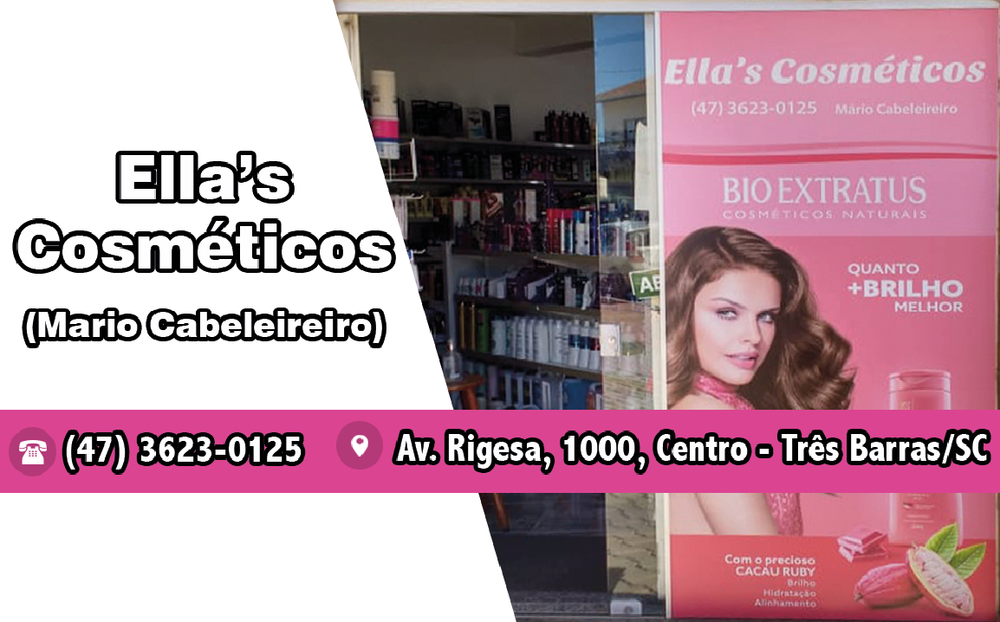
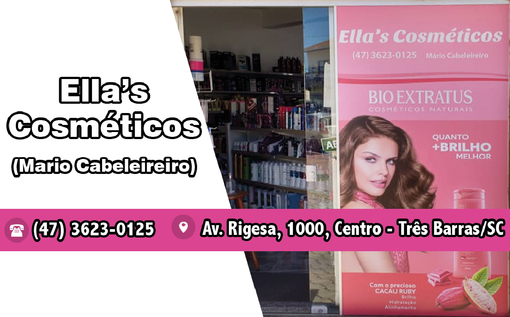

Estão abertas até 9 de janeiro de 2024 as inscrições para cursos técnicos e de Educação de Jovens e Adultos (Proeja) para ingresso no primeiro semestre de 2024.
São mais de 2.300 vagas em 58 cursos técnicos concomitantes e subsequentes (Edital 10/Deing/2024/1) nas cidades de Araranguá, Caçador, Canoinhas, Chapecó, Criciúma, Florianópolis, Garopaba, Gaspar, Itajaí, Jaraguá do Sul, Joinville, Lages, São José, São Lourenço do Oeste, São Miguel do Oeste, Tubarão e Urupema.
Há ainda 95 vagas para cursos Proeja Técnico (Edital 11/Deing/2024/1) em Florianópolis e Jaraguá do Sul, além de 35 vagas para um curso Proeja FIC (Edital 12/Deing/2024/1) em Xanxerê.
Todos os cursos são gratuitos. Também não há cobrança de taxa para participação no processo seletivo.
Acompanhe todas as informações sobre o processo seletivo em ifsc.edu.br/tecnicos
Os cursos técnicos concomitantes são destinados a quem está matriculado no ensino médio em outra instituição e quer fazer a formação técnica no IFSC.
Os cursos técnicos subsequentes são voltados a quem já tem o ensino médio completo e deseja receber a formação de técnico.
Os cursos Proeja são para quem não concluiu os estudos (ensino médio, no caso do Proeja técnico, ou fundamental, no caso do Proeja FIC) no tempo regular.
Para se inscrever, os interessados devem acessar o Portal de Inscrições e seguir o passo a passo:
O processo seletivo dos três editais é por sorteio público, que será realizado no dia 11 de janeiro de 2024. A primeira chamada com os selecionados sairá em 12 de janeiro. Também no dia 12 será publicada a lista dos candidatos em lista de espera.
Os selecionados em primeira chamada deverão enviar os documentos de matrícula de acordo com as orientações dos editais, entre 15 e 19 de janeiro. No mesmo período, os candidatos da lista de espera que tiverem interesse em vagas não ocupadas devem encaminhar a documentação manifestando esse interesse.
Para mais informações, consulte todas as normas do processo seletivo nos editais 10, 11 e 12/2024/1.
Técnico subsequente em Automação Industrial - 32 vagas (noturno)
Técnico subsequente em Mecânica - 32 vagas (noturno)
Técnico subsequente em Produção de Moda - 40 vagas (noturno)
Técnico subsequente em Vestuário - 40 vagas (noturno)
Técnico subsequente em Eletromecânica - 40 vagas (noturno)
Técnico subsequente em Logística - 40 vagas (noturno)
Técnico concomitante em Edificações - 40 vagas (vespertino)
Técnico concomitante em Manutenção e Suporte em Informática - 40 vagas (vespertino)
Técnico subsequente em Eletroeletrônica - 40 vagas (noturno)
Técnico subsequente em Mecânica - 40 vagas (noturno)
Técnico subsequente em Segurança do Trabalho - 40 vagas (noturno, com metade da carga horária em EaD)
Técnico concomitante em Meio Ambiente - 45 vagas (vespertino)
Técnico subsequente em Edificações - 45 vagas (noturno)
Técnico subsequente em Eletrotécnica - 45 vagas (noturno)
Técnico subsequente em Agrimensura - 35 vagas (matutino) e 27 vagas (noturno)
Técnico subsequente em Desenvolvimento de Sistemas - 30 vagas (vespertino)
Técnico subsequente em Edificações - 30 vagas (matutino) e 30 vagas (noturno)
Técnico subsequente em Eletrotécnica - 36 vagas (noturno)
Técnico subsequente em Eletrônica - 40 vagas (noturno)
Técnico subsequente em Enfermagem - 30 vagas (vespertino)
Técnico subsequente em Geoprocessamento - 25 vagas (vespertino)
Técnico subsequente em Manutenção Automotiva - 36 vagas (matutino)
Técnico subsequente em Mecânica - 28 vagas (vespertino) e 28 vagas (noturno)
Técnico subsequente em Meio Ambiente - 30 vagas (matutino)
Técnico subsequente em Meteorologia - 40 vagas (matutino)
Técnico subsequente em Saneamento - 30 vagas (noturno)
Técnico subsequente em Segurança do Trabalho - 32 vagas (noturno)
Câmpus Florianópolis-Continente
Técnico subsequente em Cozinha - 40 vagas (vespertino)
Técnico subsequente em Guia de Turismo - Nacional e América do Sul - 40 vagas (noturno)
Técnico subsequente em Panificação - 40 vagas (vespertino)
Técnico subsequente em Restaurante e Bar - 40 vagas (matutino)
Proeja/Técnico em Panificação Integrado ao Ensino Médio - 45 vagas (noturno)
Técnico concomitante em Biotecnologia - 40 vagas (vespertino)
Técnico subsequente em Guia de Turismo - 25 vagas (noturno)
Técnico subsequente em Hospedagem - 40 vagas (noturno)
Técnico subsequente em Administração - 40 vagas (noturno)
Técnico subsequente em Modelagem do Vestuário - 30 vagas (noturno)
Técnico subsequente em Aquicultura - 30 vagas (noturno)
Técnico subsequente em Eletroeletrônica - 40 vagas (noturno)
Técnico subsequente em Mecânica - 40 vagas (noturno)
Câmpus Jaraguá do Sul - Centro
Técnico subsequente em Têxtil - 35 vagas (vespertino) e 35 vagas (noturno)
Técnico subsequente em Vestuário - 35 vagas (matutino)
Proeja/Técnico em Vestuário Integrado ao Ensino Médio - 40 vagas (matutino)
Técnico subsequente em Desenvolvimento de Sistemas - 35 vagas (vespertino)
Técnico subsequente em Eletrotécnica - 40 vagas (vespertino) e 40 vagas (noturno)
Técnico subsequente em Mecânica - 32 vagas (matutino) e 32 vagas (noturno)
Técnico concomitante em Eletroeletrônica - 35 vagas (noturno)
Técnico concomitante em Mecânica - 32 vagas (noturno)
Técnico subsequente em Biotecnologia - 40 vagas (noturno)
Técnico subsequente em Eletromecânica - 40 vagas (noturno)
Técnico subsequente em Refrigeração e Climatização - 72 vagas (noturno)
Técnico subsequente em Administração - 40 vagas (noturno)
Técnico subsequente em Desenvolvimento de Sistemas - 40 vagas (noturno)
Técnico subsequente em Logística - 40 vagas (noturno)
Técnico subsequente em Eletromecânica - 32 vagas (noturno)
Técnico subsequente em Administração - 40 vagas (noturno)
Técnico subsequente em Eletrotécnica - 40 vagas (noturno)
Técnico concomitante em Administração - 20 vagas (noturno)
Técnico concomitante em Agricultura - 40 vagas (vespertino)
Técnico subsequente em Administração - 20 vagas (noturno)
Proeja/Qualificação Profissional em Informática Básica Integrado ao Ensino Fundamental - 35 vagas (noturno)
Por: IFSC | Redação


 


Tel: (47) 9 9704-5679
E-mail: teuespaconoticias@gmail.com